HTML5, CSS e JS
Do básico à alta performance
Apresentação Daniel Laurindo
github: laurindo
twitter: @dslaurindo
Introdução
O que é HTML?

Exemplo

Como o browser interpreta?

A árvore criada

A renderização nos browsers

Importante saber
Existe uma diferença entre DOM e Render Tree. DOM é o documento que representa como as marcações em HTML, XHTML e XML são organizadas e lidas pelo navegador, "é o cara que faz as coisas por debaixo dos panos". A Render Tree é uma outra árvore gerada pelo browser para mostrar o que você vê na tela de seu dispositivo.
Antes de dar o primeiro passo
Você deve saber a importância de UX(User Experience)
Experiência
É o que as pessoas sentem sobre o que importa para elas. São quais histórias elas contam para outras pessoas. São as boas memórias que elas mantêm. Junto a tudo isso está a ( usabilidade, arquitetura da informação, design de interação ). Experience é o todo.
Já sabemos a importância dos requisitos
Impacto de requisitos mal elaborados
- Inviabilidade do projeto
- Códigos acoplados
- Duplicação de código
- Alta taxa de bugs
- Manutenabilidade se torna cansativa e complicada
- Além de "gambiarras"
Referência

Performance

Cuidado com scripts no head

Exemplo

Quaisquer arquivos javascript quando carregados utilizando a tag script, são bloqueantes por natureza. Enquanto é feito o download e execução do script, todo processo de parser do DOM é bloqueado, impedindo a renderização do resto da página. E olha que isso irá ser aplicado a cada tag de script contida na página !!!!
Solução

Seu projeto dá suporte à apenas browsers modernos?
então experimente o async e o defer
http://zenorocha.com/html5-async-scripts/Evite código inline
1 ) Inline

Evite código incorporado
2 ) Incorporado

Mas por que?
Apesar de reduzirem o número de requisições, aumentam o tamanho do documento HTML. Elas podem ser interessante quando você tem arquivos pequenos e o custo de uma requisição é maior. Nesse caso, faça testes para avaliar se há realmente ganho. Avalie também o objetivo da página e sua audiência, se o esperado é que usuários visitem essa página somente uma única vez, como por exemplo uma campanha temporária onde não se espera futuras visitas à mesma, utilizar inline/incorporado ajudará na redução do número de requisições.
fonte: Como perder peso(no browser)Use códigos externos :)

Vantagens
- Melhora a organização do código;
- Possibilita ser armazenados em cache;
- Além de fornecer uma fácil manutenção;
Até aqui tranquilo?
Veja como esses pequenos detalhes já fazem diferença
Yahoo - 400 milissegundos de desaceleração resultou em uma queda de 5-9% no tráfego de página inteira.
Google - Um atraso de 400 milissegundos causou uma queda de 0,59% em pesquisas / usuário.
Bing - Uma página que foi 2 segundos mais lento resultou em uma queda de 4,3% na receita / usuário.
Reflow :(
what???
Reflow é o resultado de um evento que desencadeia mudanças no jeito que a pagina deve ser renderizada, tomando tempo para cálculo e reposicionamento de elementos.
Como falei antes, isso gera impacto sim.
Mais exemplos de reflows
- Adicionar, remover ou atualizar o DOM;
- Cálculos em JS para ajustar a página para diferentes dispositivos;
- Esconder nós do DOM usando display:none;
- Mover e animar o DOM na página;
- Adicionar folhas de estilo on-the-fly que mudem o comportamento dos elementos;
- Redimensionar janelas;
Na prática

Fique atento !!!!!!
Lista de elementos e atributos em desuso no HTMLResumindo
Não importa qual seja o objetivo de sua aplicação, nós desenvolvedores devemos sempre nos preocupar com otimização, código limpo e bem escrito porque isso envolve uma experiência positiva do usuário. Isso é por default o que devemos entregar para o cliente.
Links
* Carregamento de páginas(UX)* reflows
* scripts in head
* async scripts
* Impacto de performance
* Ferramentas úteis
* Referências
Primeiro Passo

Layout desenhado em cima de grid
Quando começamos a elaborar o HTML, o ideal é que o design seja bem feito em cima de uma grid.
Como assim?
good :)

bad :(

Styleguide

Até aqui tranquilo?
Preparando a arquitetura do projeto
Clone o repositório
github: Exodus
Entre na pasta do projeto pelo terminal
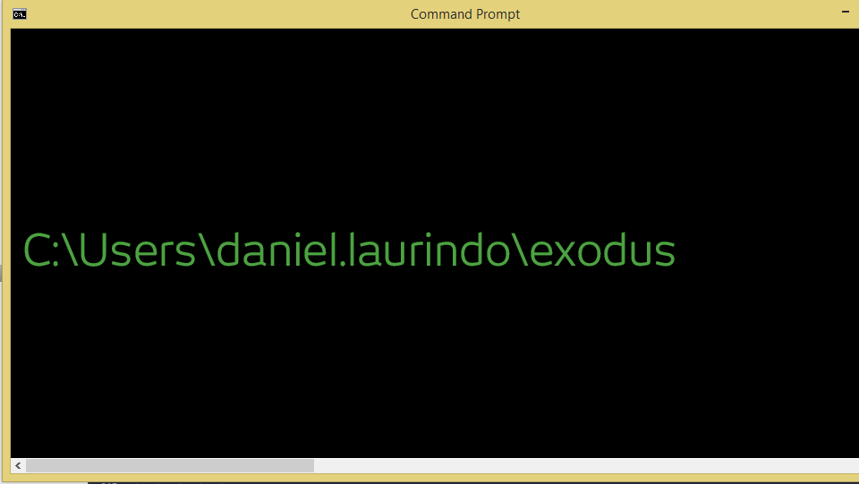
Digite o seguinte comando
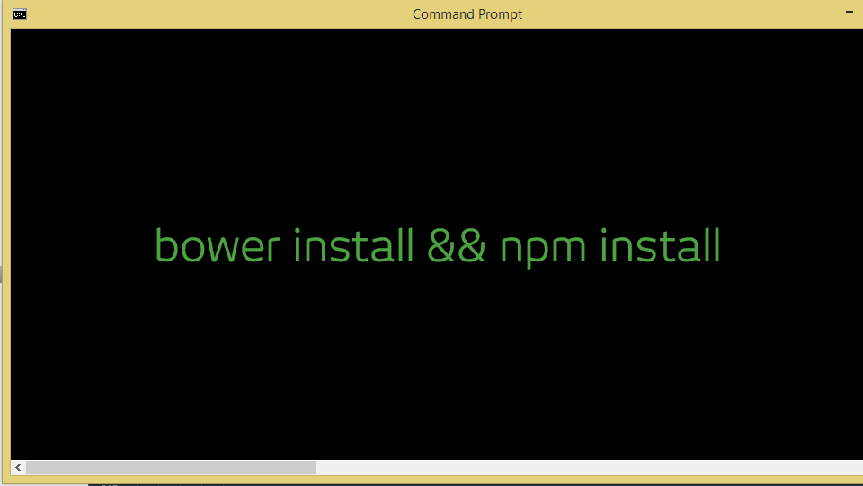
Vamos precisar do Bootstrap, então digite
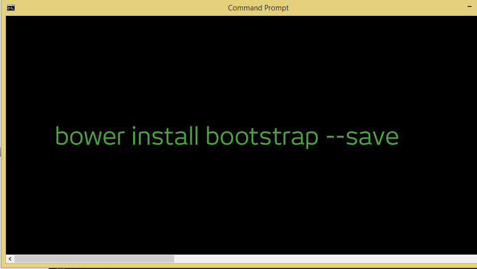
Startando ambiente
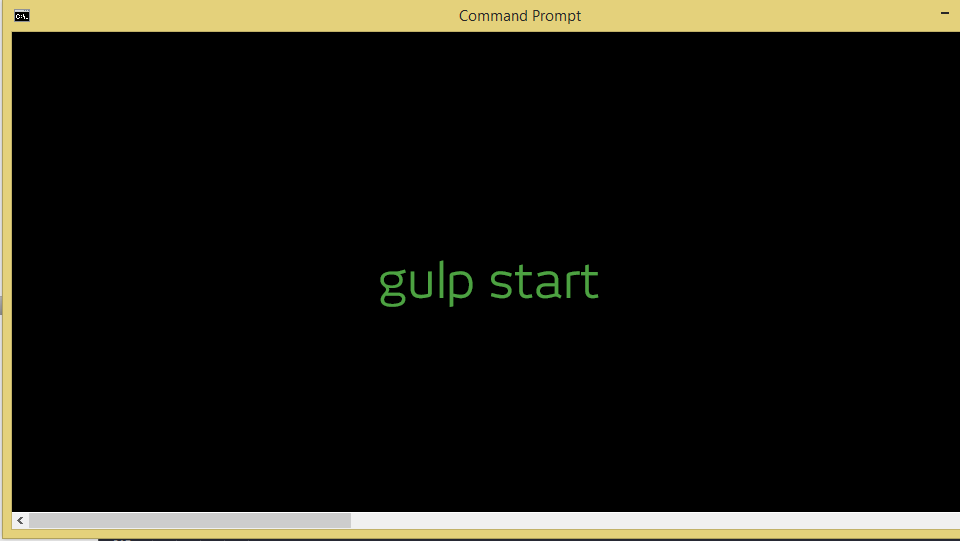
Entendendo nossa arquitetura
Começando com Gulp.js

Gulp é uma ferramenta de automação de tarefas feita em JavaScript e rodando em cima do Node.js
Dentre as tarefas do Gulp.js, você vai ver:
- Minificação de arquivos JS(uglify)
- Minificação de arquivos CSS(cssmin)
- Less
- JSHint
- Verificador de modificações(watch)
- Teste unitário(qunit)
- Build
- Deploy
Gulp ou Grunt?
Simples, use Gulp porque é muito mais rápido, pois o mesmo faz uso das streams do Nodejs para escrever arquivos diretamente em disco, sem uso de intermediários. O Gulp também abstrai detalhes mais técnicos em relação ao Grunt.
Nosso layout(DESKTOP) feito em cima de uma grid
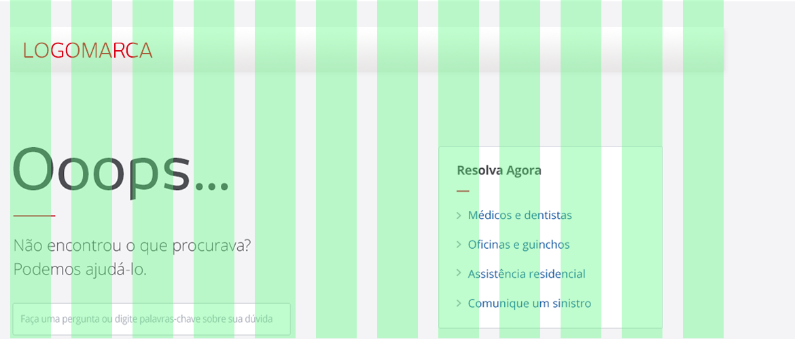Nosso layout(MOBILE) feito em cima de uma grid
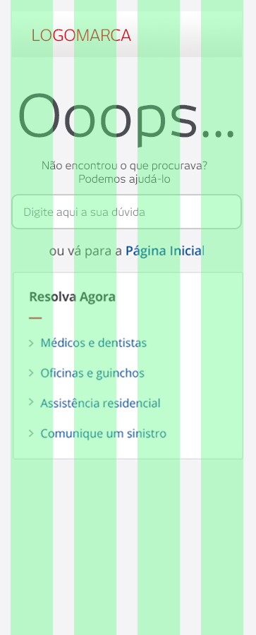Less e Sass
É uma linguagem baseada em CSS que gera CSS no final. O pessoal chama de pré-processador, porque ele lê e compila o nosso arquivo.less e gera um .css.
Exemplo - CSS
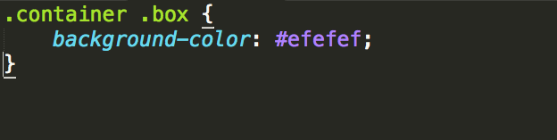Exemplo - Less
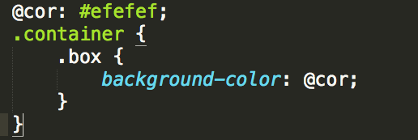Exemplo - Sass
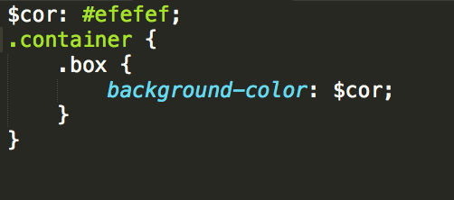Até aqui tranquilo?
Mais performance
Minificar arquivos CSS
Para manter um código legível é bom escrever comentários e ter cuidado com indentação. Só que para a máquina, nada disso importa. Por isso, lembre-se de comprimir seu CSS através de uma ferramenta automatizada. Isso irá economizar muitos e muitos bytes, acelerando assim o download, análise e tempo de execução.
Minificadores de CSS
CSS MinifierCSS Min
YUI Compressor
CSSO
Combine vários arquivos CSS em um só
Outra boa prática para organização e manutenção é separar seu estilo em diversos arquivos.
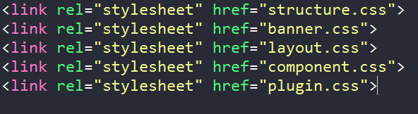Porém, é preciso realizar uma requisição HTTP para cada um dos arquivos e sabemos que o navegador não consegue lidar com muitos downloads paralelos. Logo, combine seu CSS. Quanto menor for o número de arquivos, menor será o número de requisições feitas e mais rápida sua página carregará.
Prefira link a @import
Há duas maneiras de incluir uma folha de estilo externa na sua página, pode ser através da tag linkVeja mais:
https://github.com/zenorocha/browser-diet/wiki/References#prefer--over-import
Layout fixo, liquido e responsivo
FixoLiquido
Responsivo
IE7 e IE8 não dão suporte a Media queries
Javascript, jquery e um pouco mais de performance
Carregue códigos de terceiros de forma assíncrona.
Quem nunca carregou um código de terceiros para embedar um vídeo do YouTube ou colocar um botão de like/tweet? ou usa um serviço que pode estar temporariamente fora do ar ou mesmo estar bloqueado pelo firewall?
Para evitar que isso se torne um ponto crítico no carregamento de um site ou, pior, trave o carregamento da página toda, sempre carregue estes códigos de forma assíncrona.
Lembrando que somente o IE10 adiante dá suporte.Crie loop com cache
O loop é sem dúvida uma das partes mais importantes com relação a performance no JavaScript. Busque otimizar a lógica dentro de um loop para que cada iteração seja feita de forma eficiente.
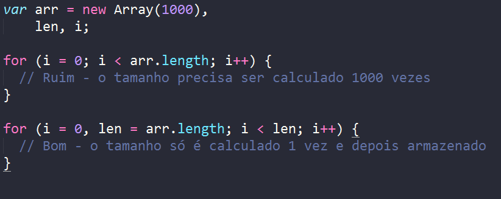Leia mais
Evite document.write
O uso do document.write faz com que a página fique na dependência do seu retorno para ser completamente carregada. Essa (má) prática já foi abolida há anos pelos desenvolvedores, mas ainda existem casos onde seu uso ainda é necessário, como no fallback síncrono de algum arquivo JavaScript.
O HTML5 Boilerplate, por exemplo, faz o uso desta técnica para carregar o jQuery localmente, caso a CDN do Google não responda.
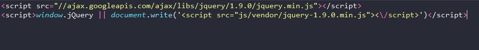Evite manipulações desnecessárias no dom
Toda vez que você toca no DOM sem realmente precisar, um bebê foca morre.
Sério, navegar por elementos do DOM é custoso. Apesar das engines JavaScript estarem cada vez mais poderosas e rápidas, prefira sempre otimizar ao máximo as consultas na árvore do DOM.
// muito ruim
for (var i = 0; i < 100; i++){
document.getElementById("myList").innerHTML += "" + i + "";
}Alternativa
Quando um elemento precisar ser acessado mais de uma vez, guarde-o numa váriavel, e assim você não vai fazer mais do que uma consulta no DOM.
// muito melhor :)
var myListHTML = document.getElementById("myList").innerHTML;
for (var i = 0; i < 100; i++) {
myListHTML += "" + i + "";
}Comprima seu script
Assim como no CSS, para manter um código legível é bom escrever comentários e ter cuidado com indentação. Mas para a máquina, isso não importa, por isso, lembre-se de comprimir seus arquivos javascript.
Combine vários arquivos js em um só
Outra boa prática para organização e manutenção é separar seu script em diversos arquivos.
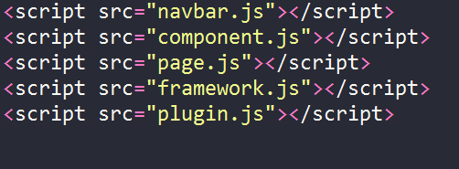Porém, é preciso realizar uma requisição HTTP para cada um dos arquivos e sabemos que o navegador não consegue lidar com muitos downloads paralelos.
Logo, combine seu JS. Quanto menor for o número de arquivos, menor será o número de requisições feitas e mais rápida sua página carregará.
Use for ao invés de each
O uso das funções nativas do JavaScript, quase sempre, trazem execuções mais rápidas que as respectivas em jQuery. Sendo assim, ao invés de utilizar o método jQuery.each, use o for do próprio JavaScript.
Veja mais aqui:
Não use jQuery sempre
Às vezes JavaScript puro pode ser mais fácil e mais performático que jQuery.
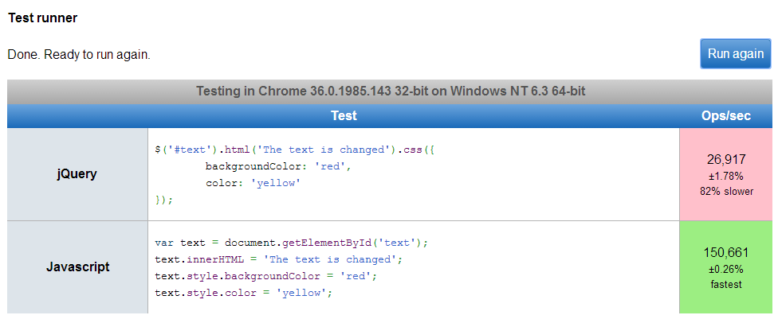Imagem e um pouco mais de performance
Não escale imagens direto no código
Defina sempre o width e o height de uma imagem, isso irá reduzir o tempo de renderização evitando repaints e reflows desnecessários.

Conhecendo esses atributos, não tente aplicar width e height de 50px em uma imagem de 700px. Você estará trafegando KBs a mais pela rede sem necessidade.
ReferênciasOtimize suas imagens
Arquivos de imagens possuem muitos KB de informações desnecessárias na Web. Por exemplo, uma foto JPEG tem um monte de metadados Exif colocados pela câmera (data da foto, modelo da câmera, local etc). Um PNG possui uma série de informações sobre cores, metadados e, às vezes, até uma miniatura da imagem embutida no meio. Nada disso é importante para a renderização da imagem no navegador e só gasta bytes de rede.
Transforme todos os seus arquivos JPEGs em progressivos.
Ver exemploFaça uso de SVG
Uma das grandes tendências do momento quando se fala sobre desenvolvimento web é o formato SVG, principalmente com o advento do design responsivo e a consequente preocupação com dispositivos com densidade de pixel superior (HiDPI) como a tela retina da Apple.
Um arquivo SVG é basicamente um mapa XML que descreve matematicamente uma figura gráfica bidimensional.

Vai usar um ícone???
Use svg ao invés de imagem
Ferramentas de diagnóstico
Use essa ferramentas para acompanhar a performance de seu site WebPageTest, HTTP Archive ou PageSpeed(site).
Por hoje é só!!!
Obrigado!!!!